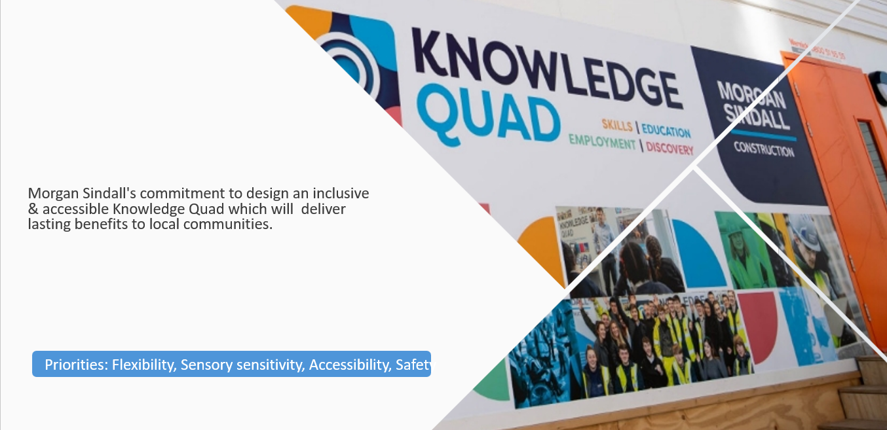
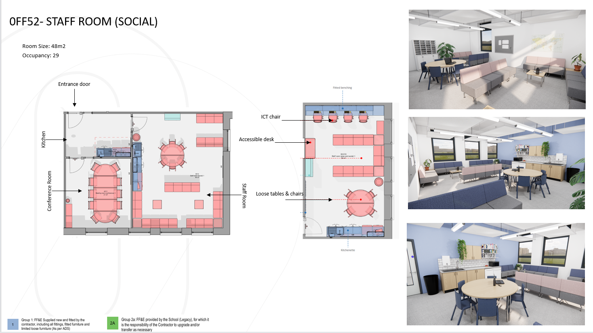
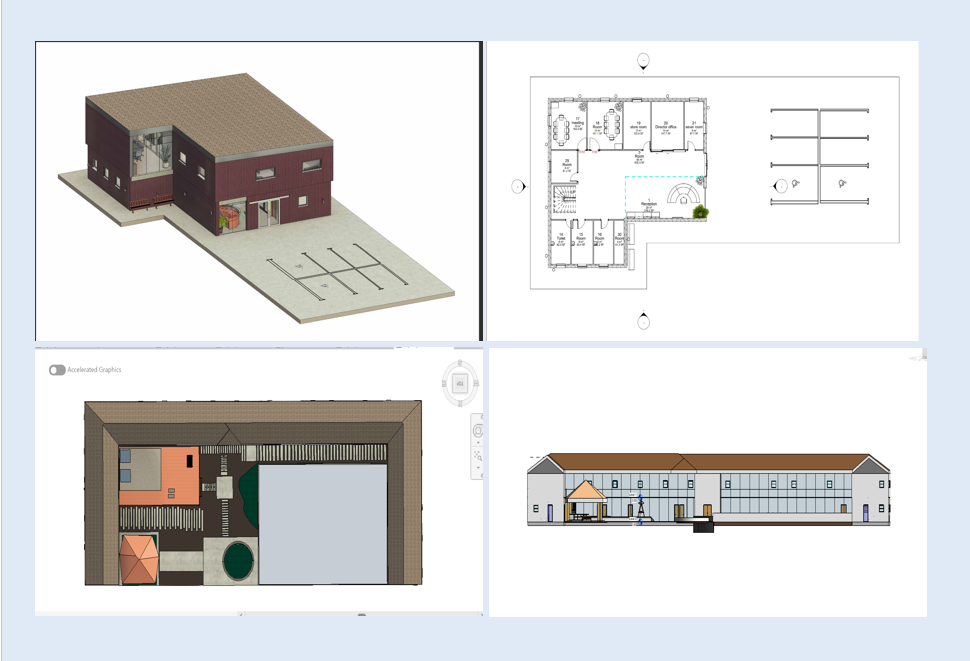
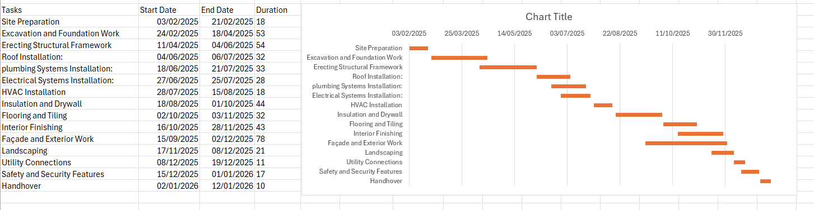
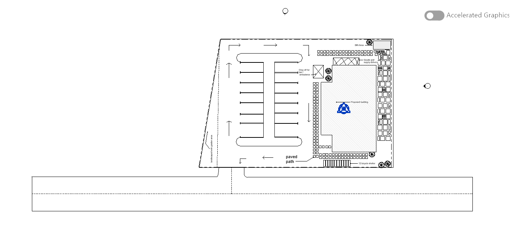
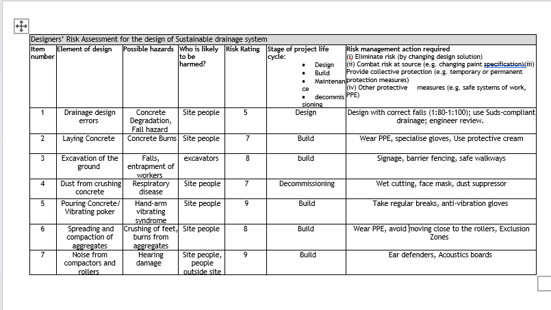

Featured Projects

SEND Knowledge Quad
An inclusive and accessible design focused on creating welcoming learning spaces for SEND users.

Space Zero Interior Design
Worked on interior and furniture layouts focused on comfort, usability and collaborative learning environments.

Technical Revit Work
Architectural revit design including a 3D model, floor plan, roof plan and elevation, showing spatial planning and visual presentation skills.

Site Planning Concepts
Explored planning, circulation and layout concepts through technical drawings and site-based thinking.

Construction planning programme of a school
A full construction programme showing the sequence, duration and dependencies of key tasks from site preparation to final handover.

Structural retaining wall Design
A reinforced concrete retaining wall design showing dimensions, reinforcement and stability considerations through both 2D drawings and a 3D model.

Technical Revit Work
Produced layouts, plans and visual concepts using Revit and CAD software during projects and coursework.

Health and Safety Awareness
Risk Assessment for a SUDs scheme, analysing hazards linked to drainage design, excavation, concrete works, aggregate compaction and equipment vibration.
Outside Engineering...
Cooking
Rollerblading
Table Tennis
Animated movies
Web development
The Value I Bring
I am driven by relentless curiosity and a commitment to continuous growth. I thrive in collaborative environments, asking the right questions to uncover more effective, innovative ways to solve problems. Whether I am navigating technical challenges, refining a design, or strategising with a team, my guiding philosophy is simple: always leave things better than I found them.
What is Next?
I am currently looking for a Level 4 apprenticeship in Civil Engineering within the built environment. Unlike many people my age, university is not a straightforward option for me. As a non-UK citizen, I am not eligible for student finance, and the international tuition fees make full‑time university impossible for me at this time. That is why a Level 4 apprenticeship is not just a preference for me, it is the only realistic route for me to continue my journey in the Built Environment. I am determined to build a career through hard work, learning on the job, and proving myself in a real working environment. This digital profile is my way of showing who I am beyond an application form. I am ready to learn, ready to contribute, and hoping to connect with an employer who sees potential in me and is willing to give me the opportunity to grow.
Let’s connect
Feel free to reach out, connect or even leave a feedback. I am always open to conversations, opportunities and learning from new people.
📧 oyinolowo02@gmail.com
📱 07448 997 497
🔗 linkedin.com/in/oyinlola-olowonjoyin